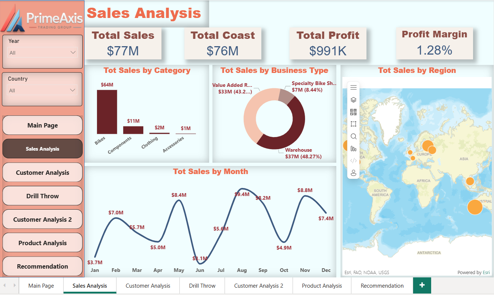
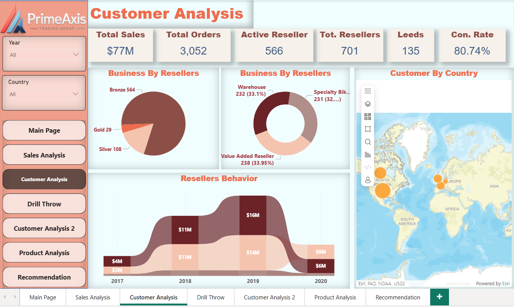
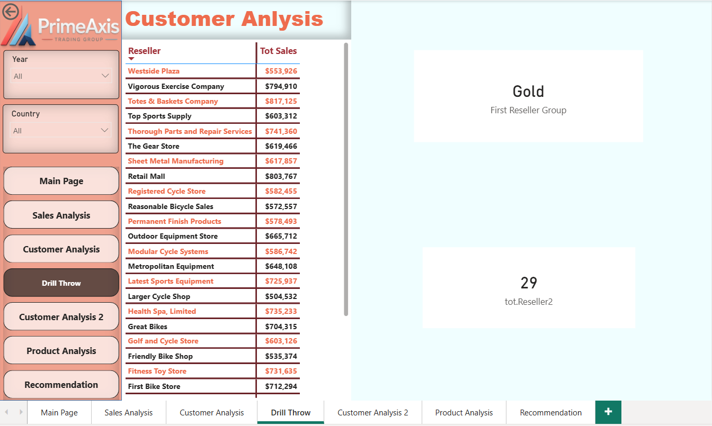
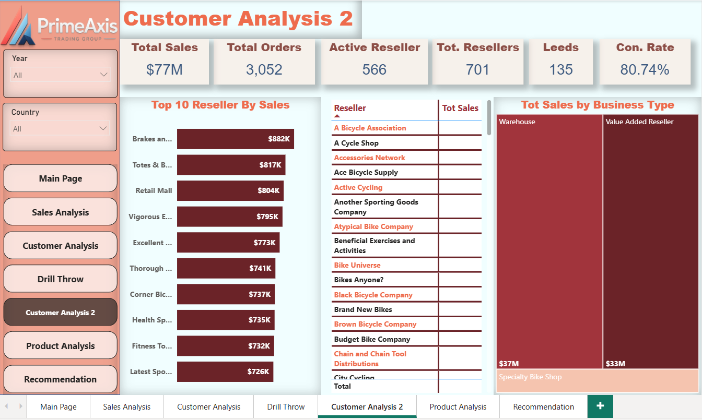
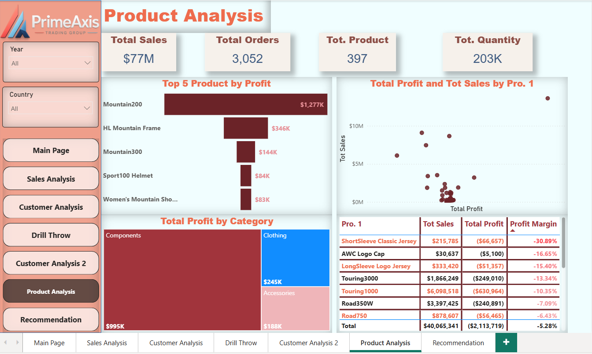
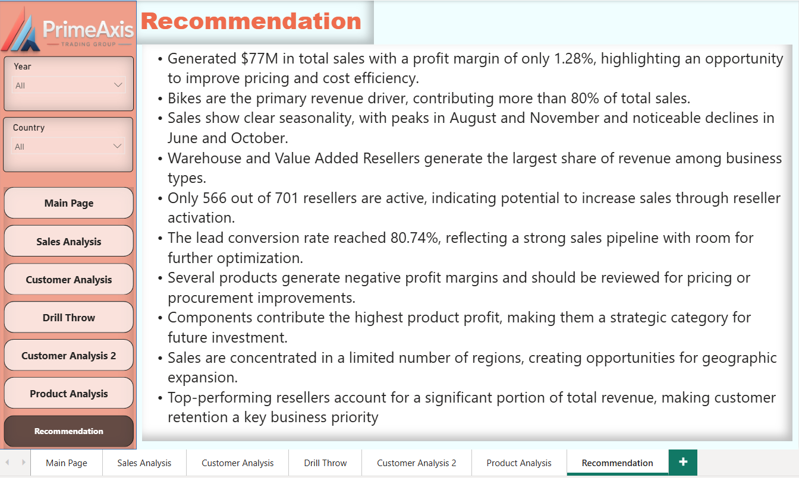

Power BI Case Study
PrimeAxis Trading Group Sales Performance Analysis
Project Overview
Developed a multi-page Power BI solution to evaluate sales, profitability, reseller performance, product performance, customer behavior, geographic distribution, and business trends.
Performance
Key KPIs
$77M
Total Sales
$76M
Total Cost
$991K
Total Profit
1.28%
Profit Margin
3,052
Total Orders
701
Total Resellers
566
Active Resellers
80.74%
Conversion Rate
397
Total Products
203K
Total Quantity
Dashboard Gallery
Power BI Analysis Pages
Sales Analysis

Evaluates total sales, total cost, profit, profit margin, sales by category, business type, region, and monthly sales trends.
Customer Analysis

Analyzes active resellers, total resellers, leads, conversion rate, reseller groups, business types, customer geography, and reseller behavior over time.
Customer Drill Through

Provides detailed reseller-level analysis using drill-through functionality to examine reseller groups, sales values, and customer performance.
Customer Analysis 2

Identifies top resellers by sales, compares reseller performance, and evaluates revenue contribution by business type.
Product Analysis

Evaluates top products by profit, category profitability, sales-profit relationships, product margins, and loss-making products.
Recommendations

Converts analytical findings into practical recommendations covering profitability, reseller activation, product performance, geographic expansion, and customer retention.
Analysis
Key Insights and Recommendations
Key Insights
- Total sales reached $77M, but the profit margin remained limited at 1.28%.
- Bikes generated more than 80% of total sales, making them the main revenue category.
- Sales showed seasonal peaks in August and November, with declines in June and October.
- Warehouse and Value Added Resellers generated the largest share of sales.
- Only 566 of 701 resellers were active, leaving 135 potential reseller leads.
- Several products recorded negative profit margins.
- Components generated the highest category profit.
- Revenue was concentrated across a limited number of regions and top-performing resellers.
Recommendations
- Review pricing, discounts, and procurement costs to improve the low profit margin.
- Prioritize high-demand bike products while monitoring category concentration risk.
- Increase reseller activation through targeted sales campaigns and account follow-up.
- Retain top-performing resellers through tailored offers and relationship management.
- Review products with negative margins for pricing or procurement improvements.
- Increase investment in profitable component products.
- Explore geographic expansion in underrepresented markets.
- Use seasonal trends to improve inventory, marketing, and sales planning.